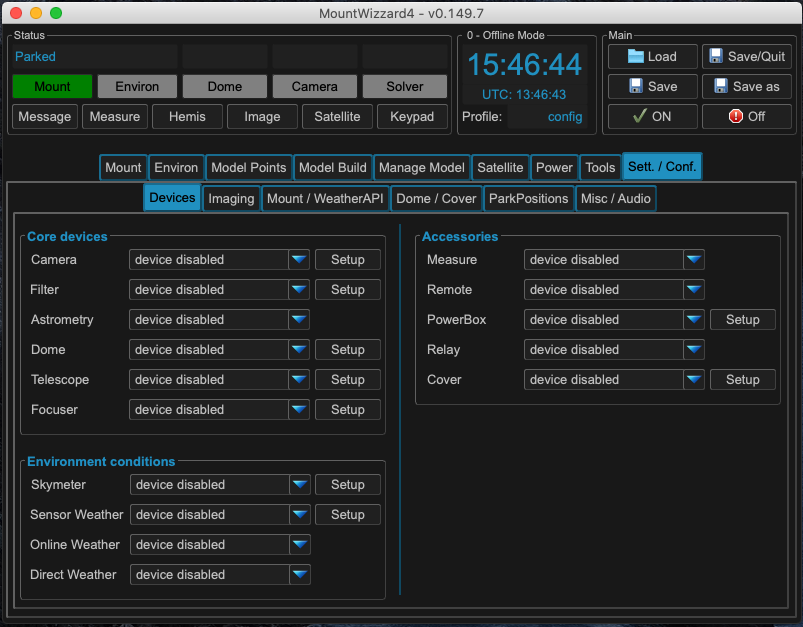
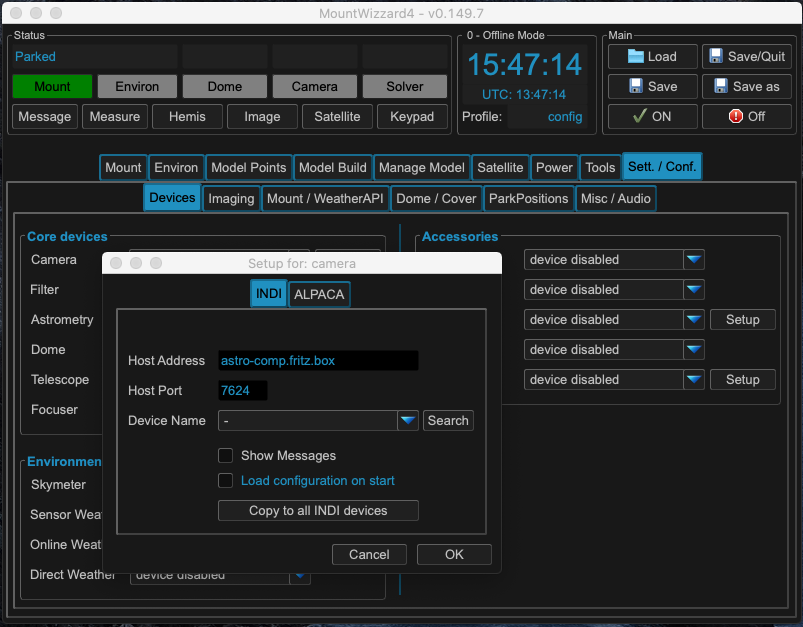
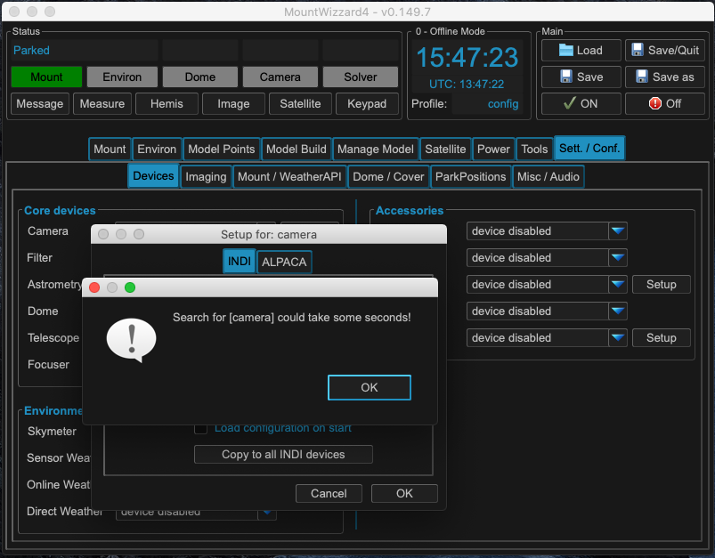
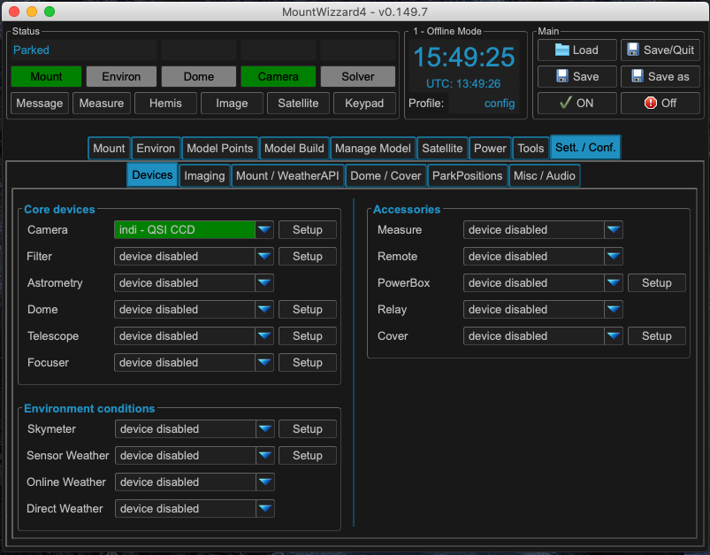
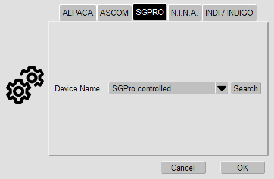
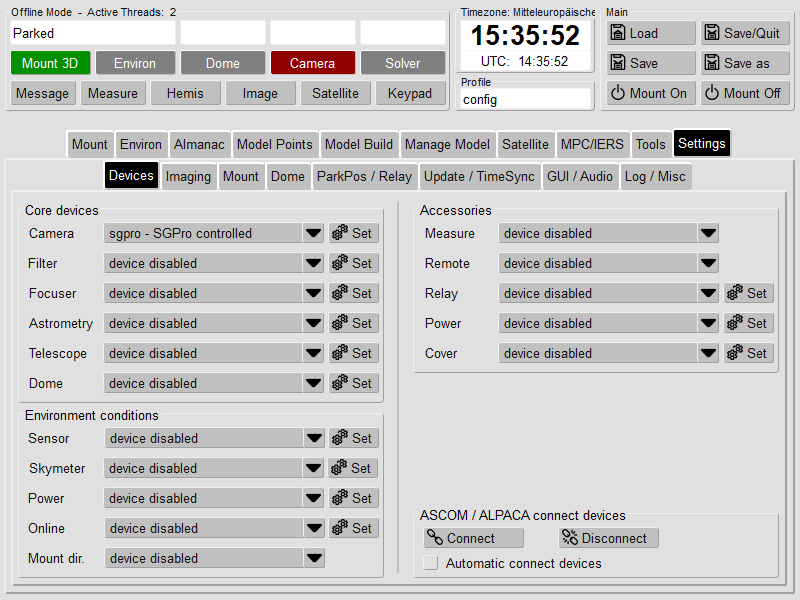
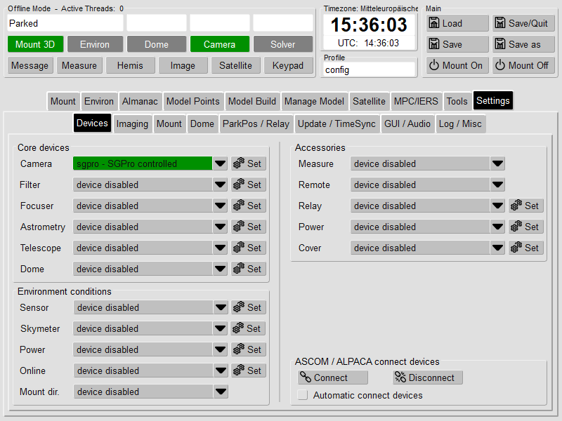
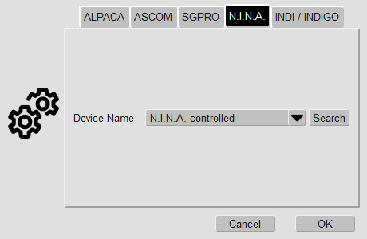
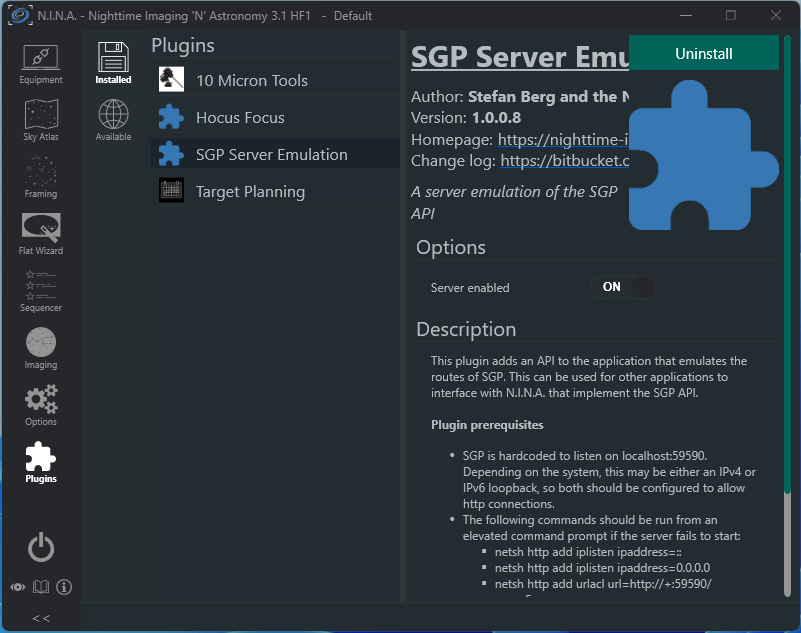
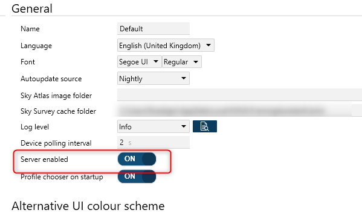

Adding the camera¶
For adding devices like the camera select the Sett. / Conf. tab in the main menu and there select the devices tab. For the following explanation we would like to connect a camera, a filter and adding a link to the mount as well. The mount link is only used for reading the parameters of the mount driver of your setup (e.g. focal length, aperture).
{kind=link}
In core devices select Setup für Camera. A popup shows up. Please fill in the ip address of the INDI or ALPACA server, where your devices are connected to.
{kind=link}
If you are using INDI, you search for INDI camera devices by clicking on the search button. Once you finished searching by pressing OK button, a list of available devices will be populated. From the list choose the device and finish the setup with OK button.
{kind=link}
The selected camera will be highlighted green in the drop down menu and in the status as well. Once you configured the camera, the selection list will be stored for later use. If you want to disable the camera, please select device disabled in the menu.
{kind=link}
MountWizzard4 will now try to connect to the device and show green light whenever a connection is established.
Do the steps 1 - 5 for all devices you need to configure. All configuration are save when leaving MountWizzard4 with Save/Quit button or just when saving the profile. You can add or change any config later on at any time.
Using SGPro or N.I.N.A. as camera¶
In addition to the standard frameworks to interface to devices, MountWizzard4 could use Sequence Generator Pro (SGPro) an Nighttime Imaging (N.I.N.A.) as a camera driver for devices attached to them. Unfortunately they support only a minimum set of devices through their API and only with a limited feature set. But the provided basic API is sufficient to do the modeling job.
Note
MountWizzard4 uses all necessary data from the FITS of the images taken by the external apps. Please make sure, that the FITS header contains this information, especially the focal length, the pixel size. Otherwise plate solving will fail. As both applications do not transfer their images to MountWizzard4, you have to ensure that the FITS files are stored on your local disk and MountWizzard4 has access.
Basically MountWizzard4 interface these apps and let them control the devices. Selection and connecting the devices have to be done manually in the regarding application. MountWizzard4 just recognizes of a device is connected or not and if connected uses it as is.
SGPro controlled mode¶
First in camera driver setup you choose to use the SGPro controlled mode:
{kind=link}
You recognize the setting in device tab:
{kind=link}
Once you connect a camera in SGPro
{kind=link}
the status in MountWizzard4 will change to connected as well.
N.I.N.A. controlled mode¶
First in camera driver setup you choose to use the N.I.N.A. controlled mode, you recognize the setting in device tab:
{kind=link}
Once you connect a camera in N.I.N.A.
{kind=link}
the status in MountWizzard4 will change to connected as well.
Preparation for using NINA 3.x as remote camera¶
N.I.N.A. 3.x realizes this feature in a separate plugin. The plugin is called SGPro server emulator:
{kind=link}
Pleas install this plugin first and enable server mode.
Preparation for using NINA 2.x as remote camera¶
In N.I.N.A. 2.x you have to enable server mode directly in main program:
{kind=link}